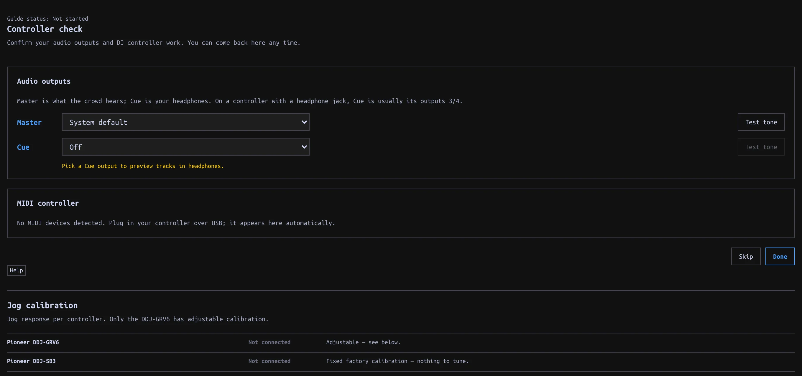

Controllers
Check a controller's mapped controls and audio outputs, then tune DDJ-GRV6 jog response if needed.
On this page
Check your controller
MIDI control and audio output are separate connections. A controller may send button presses while its Master/Cue jacks are unconfigured, or supply audio while no Mapping is detected. The on-screen Performance controls continue to work without a controller.

- Plug in the controller over USB and open Settings → Controllers → Controller check. You can also launch this guide alone from Settings → Help → Setup.
- Choose Master and Cue outputs and use each Test tone button. Pick explicit output pairs when offered; listen to confirm which pair reaches speakers and which reaches headphones. Do not assume the pair order from the controller's name.
- Under MIDI controller, find the device and check that it shows a Mapping.
- Press a button or move a control. The guide displays its mapped action and counts the controls checked.
- Click Done, or Skip to return later.
Supported models are the Pioneer DDJ-GRV6, Pioneer DDJ-SB3, and Hercules DJControl Inpulse 300 MK2. No Mapping means detection succeeded but that device's controls cannot operate manadj. An Unmapped control message on a supported model means that particular control has no assigned action.
If no device appears, check its connection. Allow MIDI access if prompted; a browser reporting MIDI unavailable cannot run this check. MIDI detection and audio routing are separate: a responding button does not confirm the headphone output. See audio outputs for output checks.
The check observes real controller input; mapped controls still operate the app while you test them. The screenshot above is the real app without connected hardware; it does not demonstrate MIDI receipt or verified physical outputs.
How a Mapping relates to the app
A Mapping translates device messages directly to Deck/Mixer actions. It is not a second copy of the keyboard layout: hardware controls can address a Deck while you browse another view. The printed label on a device does not guarantee the assigned manadj action. Check the guide's reported action for the control you moved.
| Model | Deck/FX behavior | Verification |
|---|---|---|
| AlphaTheta/Pioneer DDJ-GRV6 | Four mixer channels; each deck side switches between two Decks. Its CH SELECT, SELECT, BEAT, ON/OFF and LEVEL/DEPTH control the one shared Beat FX section. | Mapping hardware-verified; check your own audio pair order. |
| Hercules DJControl Inpulse 300 MK2 | Two Decks; separate Master and Cue level controls. Its FX section is not mapped. | Mostly hardware-verified, with exceptions in the mapping guide. |
| Pioneer DDJ-SB3 | Each side switches both its Deck controls and mixer channel between Decks. Side FX buttons share one section, rather than providing two independent processors. | Mapping exists; not hardware-verified. |
Absolute faders/knobs normally use TAKEOVER: after a view or layer changes a value, a mismatched physical control waits until it crosses the on-screen value before taking over. This avoids an abrupt jump; switch TAKEOVER off in the Performance strip only if you want immediate movement. Layer switches re-arm pickup on layered controllers. A controller can focus C/D independently of the keyboard's [ / ] focus switches.
The GRV6's own Master/headphone gain and mix controls are handled in hardware, not MIDI-mapped to the app. For GRV6/SB3 audio, explicitly choose and test the available output pairs; only the Inpulse's 1/2 Master and 3/4 Cue defaults are hardware-verified in the app. See audio routing and Beat FX mapping.
Tune jog response
Only the DDJ-GRV6 has adjustable jog calibration. Open Settings → Controllers → Jog calibration, or Calibrate jog wheels in Controller check when a GRV6 is detected.
- Load a track in Performance and test a small rim movement during playback.
- Adjust Playback bend gain for sensitivity and Playback bend clamp for the maximum bend. Playback decay window controls how the bend settles.
- Pause and compare Paused bare rim with Paused touch platter. Adjust the response that feels too fast or slow.
- Test Shift seeking before changing Shift fast-seek base or its acceleration controls.
Changes apply live and are saved. Use Reset jog defaults to start again. The SB3 uses fixed factory calibration; the Inpulse needs no calibration here. Computer-mouse jog controls are separate, under Settings → Keyboard + mouse → Mouse jog.
When a control does nothing
| Symptom | Check |
|---|---|
| No device in Controller check | Reconnect USB, allow MIDI access, and verify the device is not held by another app. MIDI unavailable in this browser cannot be fixed by selecting an audio output. |
| Device present, No Mapping | This model is detected but its controls have no registered Mapping. Use on-screen or keyboard controls. |
| Unmapped control | Only that message/control is unsupported; test another binding. A controller's printed label is not a binding promise. |
| Mapped knob/fader seems stuck | Bring it through the app value to pick it up with TAKEOVER enabled. Recheck after changing the hardware Deck layer. |
| Buttons respond, headphones silent | Controller MIDI is working; check CUE output, PFL, headphone level and CUE MIX separately. |